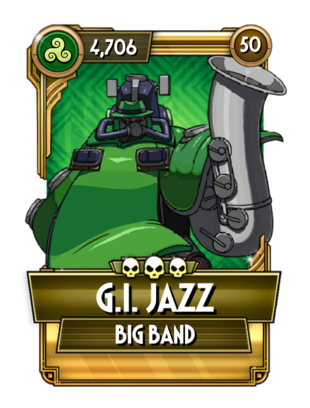

고유 능력 1: 대전마다 한 번, 체력이 25% 아래로 떨어지면, 10초 동안 재생 효과가 5회 중첩 적용됩니다.
고유 능력 2: 또한, 방어막도 3회 중첩 적용됩니다.
컬러링은 기동전사 건담의 빅 잠에서 따왔고 스킨 이름은 지 아이 조를 패러디했다. 방어막을 얻는 고유 능력을 가졌다는 점에서 헤비메탈 또는 레저넌트 이블과 유사해 보이지만, 체력이 75%나 깎여야 고유 능력이 발동한다는 점 때문에 상대가 카운터치기 너무 쉬워서 저평가받는다. 상대가 제때 저주나 재앙을 걸면 고유 능력이 없는 스킨으로 전락하고 설령 면역 등으로 디버프에 대처하더라도 체력 26% 정도 남긴 상태에서 '다이아몬드는 영원하다' 같은 강력한 일발기로 죽이면 고유 능력을 못 쓴다. 설상가상으로 팀원이 살아있을 경우, 고유 능력이 발동되더라도 태그 아웃을 해버려서 고유 능력을 낭비하기도 한다.